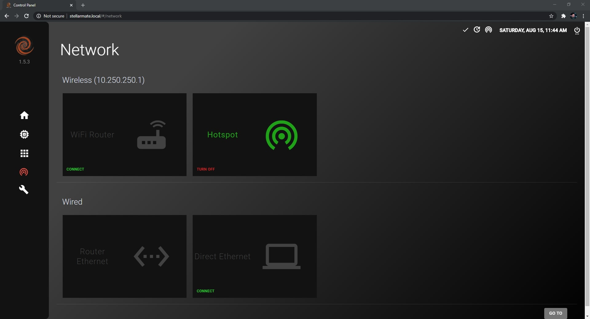
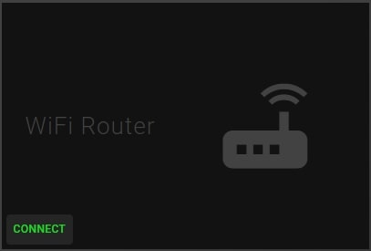
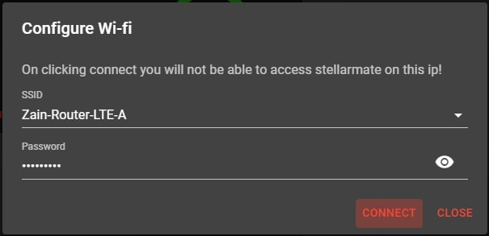
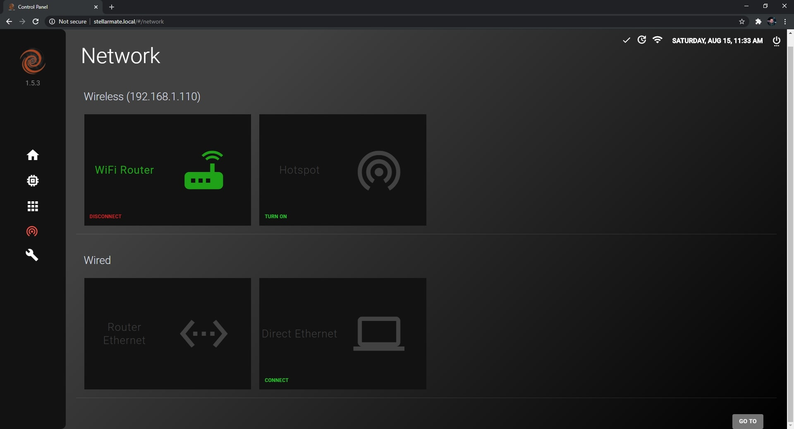

Network

Wireless
You can connect to StellarMate through a WiFi Router or the broadcasted HotSpot network.
To connect to StellarMate through a WiFi Router, you have to connect StellarMate to the WiFi Router first by following these steps:
- Click on Connect on the WiFi Router card

- Select your WiFi Router network connection and then put in the password if there is one, then click on Connect.

- Connect to the same WiFi network on your computer/laptop and then refresh the page, the network page should look like the image below.

You can always switch back to HotSpot mode whenever you want by clicking on the Turn On button under HotSpot.
Wired
StellarMate can be connected through Router Ethernet or Direct Ethernet
To connect to StellarMate through Router Ethernet, just connected an Ethernet cable to StellarMate and connected the other end to your Router.
Now connect to the same network on your computer and refresh the page.
To connect to StellarMate through Direct Ethernet, follow the video tutorial on this page.